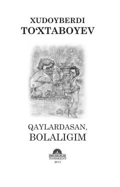

QBXudoyberdi To‘xtaboyevning bolalik va sarguzasht ruhidagi sara qissa va hikoyalari to‘plami.
Ushbu kitob taniqli yozuvchi Xudoyberdi To‘xtaboyevning bolalik yillari, orzulari va sog‘inchlari haqida hikoya qiluvchi saralangan qissa, hikoya va ertaklarini jamlagan. Asarlar o‘quvchini ezgulik, halollik va bolalik olamining yorqin xotiralari sari yetaklaydi.